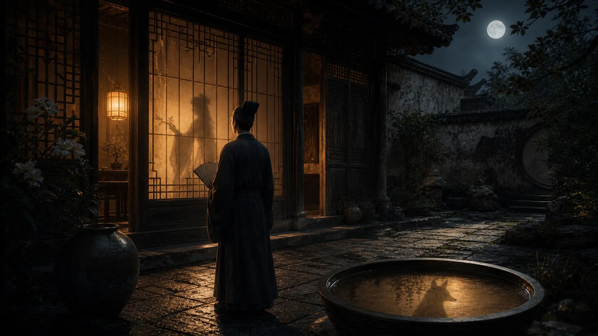

原典入口与来源核验
本栏先定位原典：原题《青凤》，见聊斋志异。本站不在未逐篇校勘前整篇搬运原文；需要核对原典时，请以公开来源链接和后续版本说明为准。
- 原题
- 青凤
- 出处
- 聊斋志异
- 作者
- 蒲松龄
- 年代
- 清代
- 处理方式
- 公版原典导读 + 人物关系解读 + 狐女专题
- 复核日期
- 2026-07-06
公版古籍来源；本站为现代导读、情节重述与评论，不作为校勘底本。

本栏先定位原典：原题《青凤》，见聊斋志异。本站不在未逐篇校勘前整篇搬运原文；需要核对原典时，请以公开来源链接和后续版本说明为准。
公版古籍来源；本站为现代导读、情节重述与评论，不作为校勘底本。
读书人进入狐族旧宅，遇见青凤。相爱并不自动通向安稳，身份、家族和人狐之间的恐惧都在故事里慢慢显影。
《青凤》的入口很有聊斋气质：旧宅、夜色、陌生女子、若隐若现的家族秩序。它看似是一次奇遇，真正耐读的却是奇遇之后怎样相处。
青凤不是一个只为点亮艳遇场面的角色。她有自己的亲族、顾虑和处境。读者如果只把她看成神秘狐女，就会错过故事里关于身份和信任的细节。
这篇适合放入狐女专题，但不能和《婴宁》《聂小倩》写成同一种人物。婴宁的重点是笑声和不被完全规训，聂小倩的重点是困境中的选择，青凤则更像被家族关系包围的人。
故事里的旧宅并不只是背景。旧宅意味着边界：人进入异类的生活空间，既被吸引，也被观察。双方都不是完全自由的，情意必须在空间和身份的压力下寻找缝隙。
这类故事最容易被写薄，变成“人狐相恋”的标签页。正式导读应把情节拆成相遇、试探、暴露、阻隔和重逢几个节点，让读者看到每一步都有代价。
青凤的动人处在于，她并没有被写成完全脱离现实的幻影。她会害怕，会被亲族牵制，也会在关系里承担风险。蒲松龄让狐女拥有社会关系，于是她不再只是孤零零的美丽异类。
从站点结构看，《青凤》可以成为狐女人物档案的中段篇目。它比《婴宁》更暗，比《聂小倩》少一点受困叙事，却同样适合讨论女性角色如何在外部命令中保存自己的选择。
页面可以加入“狐宅关系图”模块：谁在保护青凤，谁在警惕人类，谁在推动相见。关系图不必复杂，但能让读者理解这不是两个人孤立的爱情，而是两个秩序之间的短暂交会。
来源处理上，本站只使用公版原典作为出发点，不复制现代改写。若后续引用不同整理本中的异文，也应标明采用版本，避免把流传差异抹平。
这篇还可以和《画皮》形成反差：同样涉及外表和身份，《画皮》写伪装带来的危险，《青凤》则写真实身份暴露后仍然可能存在的情意。两篇互链，会让“识人”主题更丰富。
如果未来加入 AI 阅读路线功能，《青凤》可以被归入“狐女与身份边界”路径。这样的功能应服务读者继续阅读，而不是把故事变成自动摘要。
《青凤》的深读重点应放在“进入他者之家”。许多狐女故事让异类进入人间家庭，而这篇先让人进入狐宅。视角一换，读者会意识到人并不总是稳定的观察者，也可能成为被审视的闯入者。
青凤的亲族关系也值得写清楚。狐女不是孤立出现的浪漫形象，她背后有家族、禁忌和风险。把这些关系放出来，故事就从私情扩展成两个生活秩序之间的试探。
这篇可以做一组“身份暴露后的故事”。有些故事的悬念在于真相揭开前，有些则在真相揭开后仍要继续相处。《青凤》属于后者，它关心的是知道对方是谁以后，情意还是否成立。
页面后续可以补一个“旧宅空间”小节：门、灯、院落、内室分别象征进入程度。读者顺着空间变化读，会更容易理解关系如何从好奇走向危险。
这篇也能帮助网站避免狐女题材同质化。不同狐女篇目必须有不同问题意识：婴宁是笑声，青凤是家族，香玉是花魂，聂小倩是困境。分类越清楚，整站越有编辑感。
青凤页还可以补“相认之后”的阅读提示：许多故事把揭露身份当结尾，这篇却让揭露成为新的开始。读者会因此更在意关系如何继续，而不是只追逐悬念。
这类处理能让狐女题材更成熟：不是每篇都靠神秘女子登场，而是让每个人物拥有不同的压力来源和选择方式。
两篇都关心异类女性如何进入、抵抗或重组家庭规则。